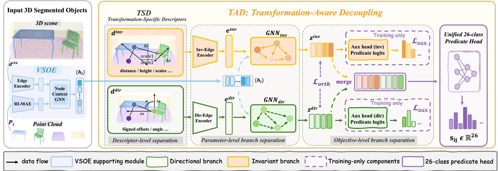

YAW-INVARIANT RELATIONS
Stay stable across viewpoints
These predicates describe contact, support, distance, or semantic structure. Their meaning should not change merely because the camera rotates around the vertical axis.
Submitted to AAAI 2026
KEY IDEA
Under yaw rotations, relations do not share one universal transformation rule. Directional predicates should follow the observation frame, while most physical, support, and semantic predicates should remain stable.
YAW-INVARIANT RELATIONS
These predicates describe contact, support, distance, or semantic structure. Their meaning should not change merely because the camera rotates around the vertical axis.
DIRECTIONAL RELATIONS
A yaw rotation changes the horizontal observation axes. Directional predicates should therefore transform predictably instead of remaining fixed in a shared relation representation.
0° viewpoint
table is left of chair90° viewpoint
table is front of chairMOTIVATION
Conventional 3D scene graph models learn all predicates in a single relation space. This entangles two conflicting requirements: stable prediction for yaw-invariant predicates and viewpoint-following prediction for directional predicates.

METHOD
TAD combines a viewpoint-stable object encoder with two non-shared relation branches: one for yaw-invariant cues and one for direction-sensitive cues.

TAD decouples relation reasoning at three levels: transformation-specific geometric descriptors, non-shared invariant and directional relation branches, and group-aware auxiliary objectives. The two relation factors are then merged for unified 26-class multi-label predicate prediction.
DEMONSTRATIONS
We compare predictions for the same physical scene under rotated observation frames.
Under a 90° yaw rotation, directional predicates undergo an axis exchange: for example, left → front. Meanwhile, standing on remains unchanged. TAD captures both behaviors in a unified scene graph.
A conventional baseline can appear plausible in the canonical view but becomes inconsistent after rotation. TAD better preserves attached to and standing on, while updating directional predicates consistently with the observation frame.
RESULTS
TAD improves viewpoint robustness without training-time rotation augmentation, while maintaining strong performance on the standard 3DSSG benchmark.
Overall R@50
86.0 → 84.5
Only −1.5 at 90°
Directional mR@50
87.9 → 86.8
Only −1.1 at 90°
Invariant mR@50
62.8 → 63.3
Stable across viewpoints
| Method | 0° Overall R@50 | 90° Overall R@50 | 0° → 90° Change | 90° Directional mR@50 | 90° Invariant mR@50 |
|---|---|---|---|---|---|
| VL-SAT | 79.9 | 68.2 | −11.7 | 67.8 | 51.1 |
| OCRL | 82.0 | 69.9 | −12.1 | 67.4 | 53.1 |
| TAD (Ours) | 86.0 | 84.5 | −1.5 | 86.8 | 63.3 |
We keep each physical scene fixed and express its point cloud in yaw-rotated observation frames at 0°, 90°, 180°, and 270°. Directional predicate labels are transformed by the corresponding deterministic permutation, while yaw-invariant predicates remain unchanged.
The main robustness evaluation uses PredCls with ground-truth object labels and reports Overall R@50, directional mR@50, and invariant mR@50. This isolates predicate-level transformation behavior from object-classification errors.
REPRODUCIBILITY
TAD is evaluated on the 3DSSG benchmark using a controlled yaw-viewpoint protocol.
The final model uses a viewpoint-stable object encoder and transformation-aware relation decoupling. Evaluation is performed across cardinal yaw viewpoints under the same physical-scene setting.
LIMITATIONS
TAD focuses on gravity-aligned indoor scenes and robustness to yaw rotations. The current evaluation uses the closed 26-class 3DSSG predicate vocabulary and standard instance masks. Future work can extend the framework to partial visibility, occlusion, reconstruction noise, richer predicate vocabularies, and softer or data-adaptive transformation grouping.
CITATION
This citation is intentionally anonymous during review. Replace the author list, venue, and publication details after the paper is publicly available.
@misc{tad_3dsgg_2026,
```
title = {Not All Relations Rotate Alike:
Transformation-Aware Decoupling for
Viewpoint-Robust 3D Scene Graph Generation},
author = {Anonymous Authors},
year = {2026},
note = {Under review}
}